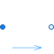
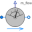
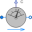
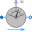
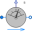
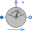
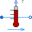

PartialFlowSensorPartial component to model sensors that measure flow properties |

|
Information
This information is part of the Modelica Standard Library maintained by the Modelica Association.
Partial component to model a sensor that measures any intensive properties
of a flow, e.g., to get temperature or density in the flow
between fluid connectors.
The model includes zero-volume balance equations. Sensor models inheriting from
this partial class should add a medium instance to calculate the measured property.
Parameters (3)
| allowFlowReversal |
Value: system.allowFlowReversal Type: Boolean Description: = true to allow flow reversal, false restricts to design direction (port_a -> port_b) |
|---|---|
| m_flow_nominal |
Value: system.m_flow_nominal Type: MassFlowRate (kg/s) Description: Nominal value of m_flow = port_a.m_flow |
| m_flow_small |
Value: if system.use_eps_Re then system.eps_m_flow * m_flow_nominal else system.m_flow_small Type: MassFlowRate (kg/s) Description: Regularization for bi-directional flow in the region |m_flow| < m_flow_small (m_flow_small > 0 required) |
Connectors (2)
| port_a |
Type: FluidPort_a Description: Fluid connector a (positive design flow direction is from port_a to port_b) |
|
|---|---|---|
| port_b |
Type: FluidPort_b Description: Fluid connector b (positive design flow direction is from port_a to port_b) |
Components (1)
| system |
Type: System Description: System wide properties |
|---|
Extended by (8)
|
Modelica.Fluid.Sensors Ideal sensor for volume flow rate |
|
|  |
Modelica.Fluid.Sensors Ideal sensor for mass flow rate |
|  |
Modelica.Fluid.Sensors Ideal two port sensor for trace substance |
|  |
Modelica.Fluid.Sensors Ideal two port sensor for mass fraction |
|  |
Modelica.Fluid.Sensors Ideal two port sensor for the specific entropy |
|  |
Modelica.Fluid.Sensors Ideal two port sensor for the specific enthalpy |
|  |
Modelica.Fluid.Sensors Ideal two port temperature sensor |
|
Modelica.Fluid.Sensors Ideal two port density sensor |